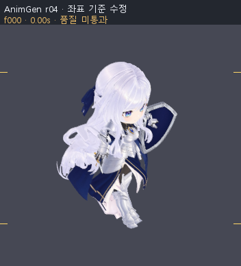
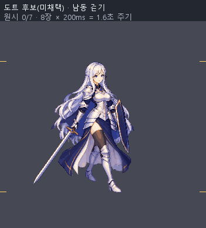
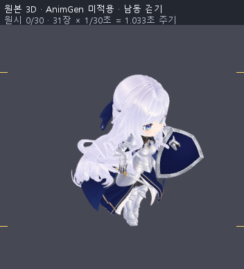
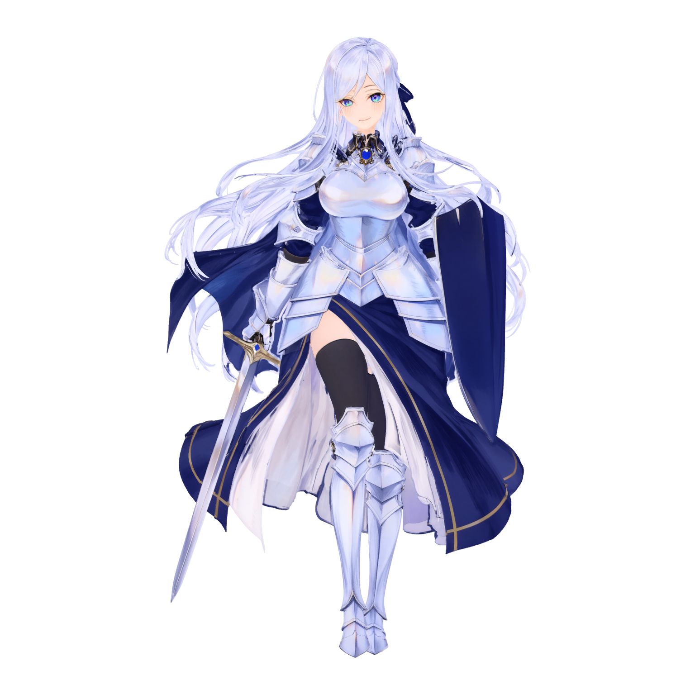
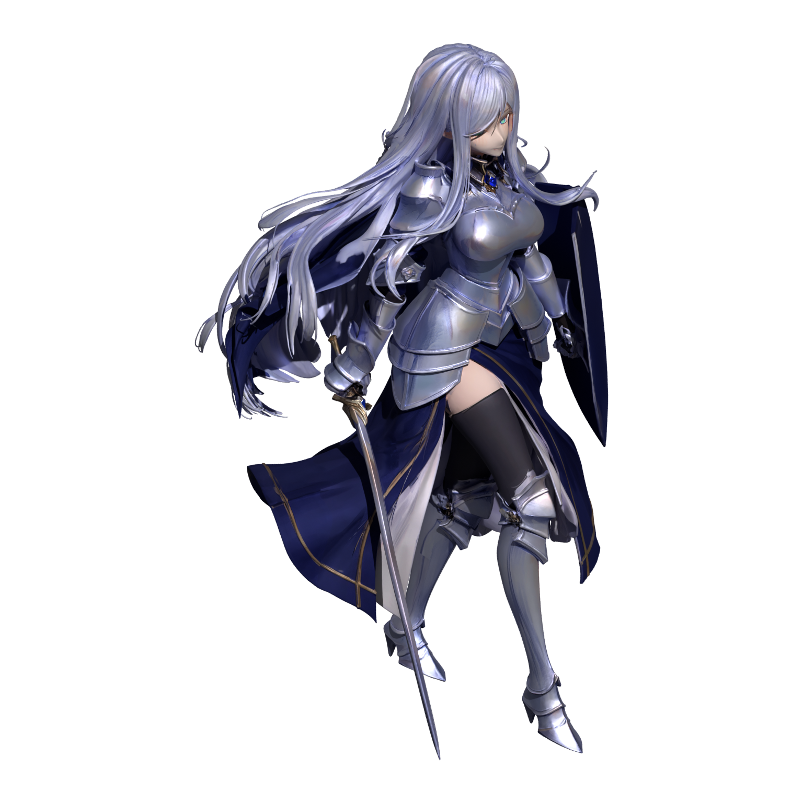
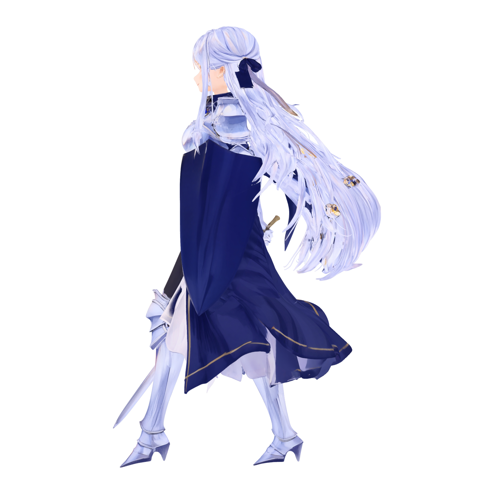
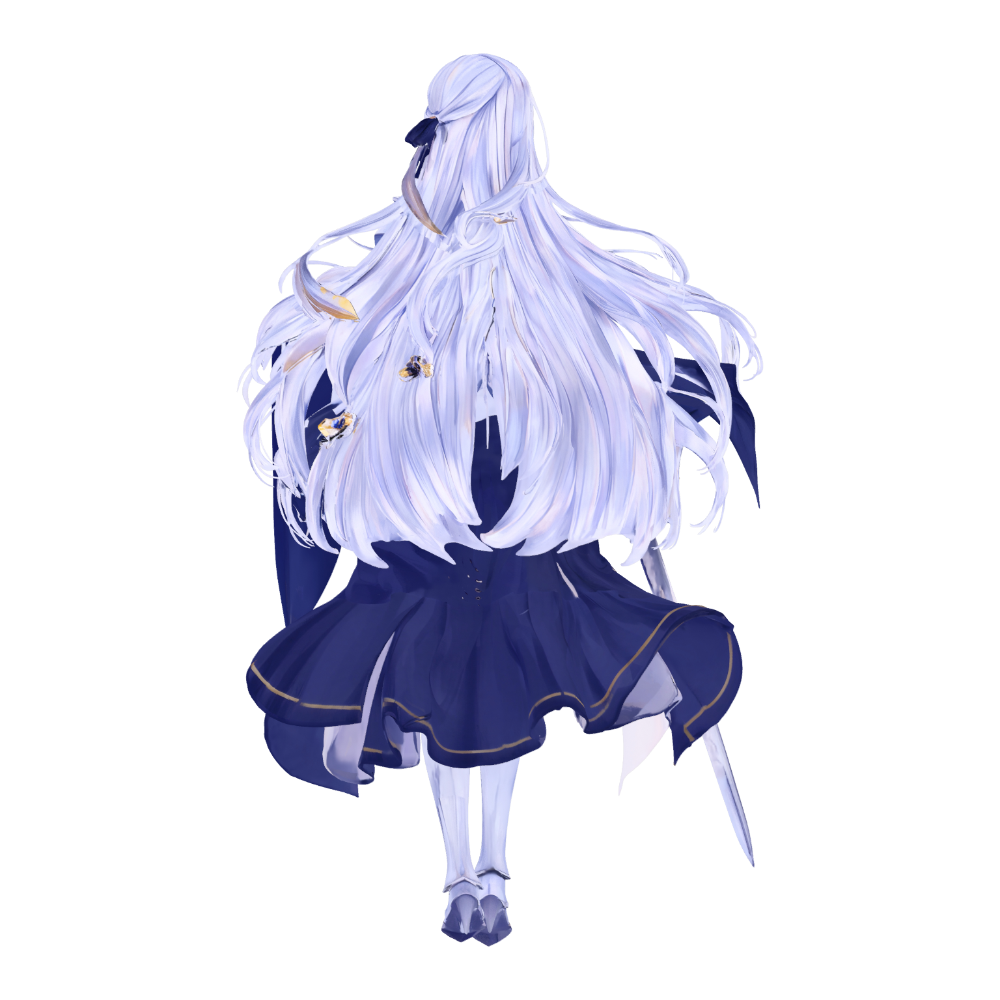
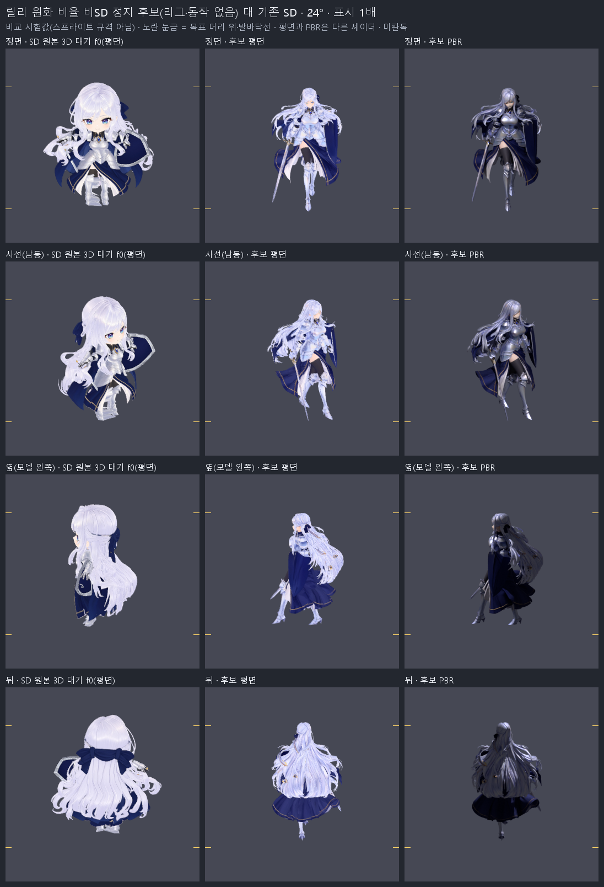
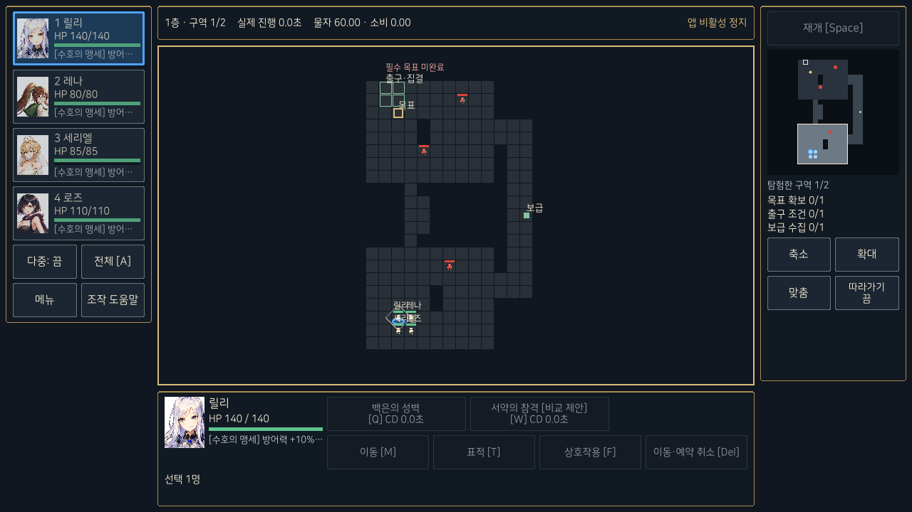
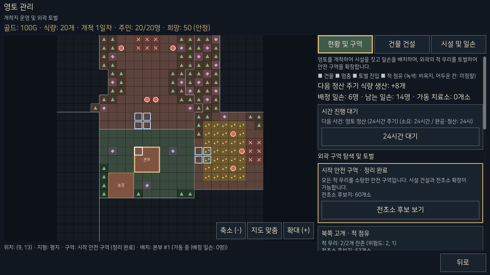

릴리 도트·3D·AnimGen 비교
AnimGen은 별도 Unreal 시험본에 적용했습니다. 재연결 좌표 오류를 수정하고 다시 촬영했으며, 남은 모델 변형·바닥·무기 연결 문제는 검수 중입니다. 본편에는 반영하지 않았습니다.
정지 화면입니다. 재생하면 각 자료의 본래 시간대로 움직입니다.
AnimGen 적용 시험
Unreal 적용 확인 · 5.5초 기록
재연결 좌표 수정본 · 품질 미통과

그림을 불러오지 못했습니다. 아래 실제 기록 파일을 확인해 주세요.


도트 걷기 후보
PixelLab 생성 · Aseprite 손질 · 남동 8장 / 1.6초

그림을 불러오지 못했습니다. 아래 원본 파일을 확인해 주세요.


기존 SD 3D 원본
AnimGen 미적용 · 원본 31장 / 약 1.033초

그림을 불러오지 못했습니다. 아래 원본 파일을 확인해 주세요.


화면 재생은 색 손실 없는 APNG입니다. GIF는 256색 형식이라 색상·세부 표현에 차이가 있습니다. AnimGen 자료는 이동·방향 전환·정지 입력을 포함한 5.5초 기록을 반복하며, 완성된 전진 걷기 루프가 아닙니다. 화면 폭에 따라 축소되어 보일 수 있습니다. 적용 전 두 기준의 정지 화면 보기

이 비교에서 확인할 수 있는 것과 한계
기존 도트·3D는 적용 전 기준이고, 첫 번째 자료는 실제 AnimGen 적용 후의 재연결 검수 출력입니다. Unreal 5.8.4의 공식 예제 동작을 릴리에 리타깃·반출하고 원본 모델·재질로 재연결한 자료이며, 엔진 직접 재생 캡처는 별도 링크에 있습니다. 본 전장 반입이나 릴리 전용 신경망 학습 완료를 뜻하지 않습니다.
- 도트·기존 3D 기준의 표시 키 중앙값은 220.5px입니다. AnimGen은 같은 원본 모델과 카메라 배율을 사용하며 자세에 따라 보이는 높이가 달라집니다. 체형·머리 비율은 서로 다르고 카메라 24°는 비교용 추정값입니다. 같은 동작·보행 위상을 맞춘 우열 시험은 아닙니다.
- 각 자료의 본래 시간을 유지합니다. 도트는 1.6초, 기존 3D는 약 1.033초 주기이며 새 AnimGen 기록은 5.5초입니다. AnimGen의 60fps 전 331표본을 계측했고, 화면 비교는 30fps 165장으로 5.5초를 재생합니다. 기록 끝에서 시작으로 돌아가는 연결은 완성된 걷기 루프의 이음이 아닙니다.
- 기존 3D에는 걷기 발의 바닥 관통, 대기 발 뜸, 손·무기의 위팔 고정과 목걸이 변형 문제가 남아 있습니다. 원본을 줄이거나 이 결함을 숨기지 않았습니다.
- 움직이는 루트의 고정 좌표 기준을 수정한 뒤 331표본의 12관절 거리 회귀 검사를 통과했습니다. 다시 촬영한 결과에도 신규 늘어남·눌림과 기준 바닥면 아래 몸체 정점이 남아 있습니다. 좌표 오류 해결을 모델 품질 통과나 AnimGen의 최종 우열 판정으로 확대하지 않습니다.
- 도트는 현재 남동 걷기 후보만 있습니다. 다른 방향·공격 동작과 본 전장 반입은 완료되지 않았습니다.
- 실제 적용·반출·재사용은 확인했지만 전체 시각 검수, 결함 수정, 모바일 성능과 최종 아트 품질은 통과 전입니다. 게임 코드·기존 저장·도트 본편 방향은 바꾸지 않았습니다.
릴리 원화 비율 3D 후보
별도 비SD 후보 1개 · 실제 모델 촬영 · 리깅·동작 검증 전
승인 원화의 은발·파란 눈·갑옷·검·방패를 기준으로 Meshy에서 생성한 모델입니다. 2,110,258삼각형 원본과 기본색 8K·금속/거칠기 4K·노멀 4K 이미지를 줄이지 않고 불러와 촬영했습니다. 아래는 정지 외형 비교이며 게임 전환이나 최종 채택이 아닙니다.


정면 사진을 불러오지 못했습니다. 사진 링크에서 원본을 확인해 주세요.
정면 · 기본색
얼굴·머리카락·갑옷의 세부 표현을 보는 촬영입니다. 이 자세 자체가 대기 애니메이션은 아닙니다.


재질 비교 사진을 불러오지 못했습니다. 사진 링크에서 원본을 확인해 주세요.
사선 · 광원과 재질
가져온 PBR 재질을 사용한 별도 촬영입니다. 기본색 보기와 조명·셰이더가 다르며 본게임 화면은 아닙니다.


옆모습 사진을 불러오지 못했습니다. 사진 링크에서 원본을 확인해 주세요.
옆모습 · 겹침 확인
방패·망토·머리카락의 겹침과 실제 연결 구조를 검수해야 합니다. 리깅과 움직임이 해결됐다는 뜻은 아닙니다.


뒷모습 사진을 불러오지 못했습니다. 사진 링크에서 원본을 확인해 주세요.
뒷모습 · 수정 필요
뒤머리의 금색·피부색 조각과 표면 끊김이 검수 대상입니다. 앞면이 보인다는 이유로 뒷면 품질을 통과시키지 않았습니다.


표시 크기 비교판을 불러오지 못했습니다. 그림 링크에서 원본을 확인해 주세요.
SD와 표시 크기 비교
왼쪽은 기존 SD 대기, 가운데는 새 후보 기본색, 오른쪽은 새 후보 PBR입니다. 같은 표시 키 목표에서는 원화 비율의 얼굴이 더 작게 읽힙니다. 2배 비교판 크게 보기

비교 조건과 아직 확인하지 않은 것
24° 카메라와 220.5px 표시 키는 시험 조건입니다. 기존 SD는 몸 메시의 걷기 중앙값, 새 후보는 무기를 포함한 정지 메시 전체를 기준으로 맞췄으므로 자세·맞춤 정의가 완전히 같지는 않습니다. 생성 원본과 재질도 달라 체형만 바꾼 통제 비교가 아니며, 물리적 키나 게임 스프라이트 해상도를 확정한 것이 아닙니다.
새 후보에는 아직 리그와 동작이 없습니다. 대기·걷기·전환·손과 장비·바닥·전 프레임 변형, 모바일 성능은 미검증이며 기존 SD·도트 본편·저장은 유지합니다. 원본 3D 파일과 내부 자료는 공개하지 않습니다.
실제 Godot 게임 화면
2026.10.22 실행본 · 전장과 배경은 기능 검증용 표현입니다.
실제 타이틀에서 4인 캠프·정비·장비·영토를 거쳐 첫 층으로 들어간 실행 화면입니다. 위의 새 아트 후보가 본 전장에 적용됐다는 뜻은 아닙니다.


전투 화면을 불러오지 못했습니다. 그림 링크에서 원본을 확인해 주세요.
탑 탐험·전투
1층 진입 화면입니다. 캡처 당시 앱 비활성화로 정지된 상태이며, 연결된 방·복도와 파티·물자·스킬 표시를 확인할 수 있습니다.


영토 화면을 불러오지 못했습니다. 그림 링크에서 원본을 확인해 주세요.
영토·외곽 운영
본부·농장·점유 구역과 건설·일손·외곽 토벌 연결입니다. 화면의 수치는 조정 가능한 시험값입니다.
실행 검증 범위 보기
- 2026.10.22 최종 기능 4,757검사와 복구 26,402검사는 실패 0이며 실제 렌더 64프레임을 확인했습니다.
- 별도 4인 시험에서 1~10층 연속 진행, 5층 예고·10층 장치, 다른 프로세스의 저장 재개를 확인했습니다. 본 이야기의 합류 완료나 100층 제작 완료를 뜻하지 않습니다.
- 이 페이지의 두 게임 사진은 실제 장면 버튼 신호로 타이틀·캠프·정비·장비·영토·첫 층을 확인한 25항목 실행에서 나온 것입니다. 물리 키·마우스 및 모바일 실기기 시험과 구분합니다.
- 2026.10.24 별도 Godot 스프라이트 검수 화면에서는 입력·프레임 18항목과 실제 재생·정지·0.5/1/2배 표시를 확인했습니다. 본 전장 반입 검증은 아닙니다.
역할별 작업현황
기능 결과는 10월22일 기준점이며, 10월25일 AnimGen 실제 적용·검수와 아트 제작을 구분해 기록합니다.
- 총괄
- 기능 통합본·기존 진행을 보존하고 현재 작업물과 한계를 정리합니다. 홈페이지에 실제 사진과 재생 자료를 직접 게시합니다.
- 기술 검토·통합
- 별도 Unreal 5.8.4 사본에서 공식 예제 동작의 릴리 리타깃·반출·재생을 확인했습니다. 재연결 좌표 오류 수정과 실제 회귀 검사를 마쳤으며 기존 가중치 결함과 새 원화 비율 후보의 원본 유지 리깅을 별도로 다룹니다.
- 개발 A
- 공통 전투·물자 시계·저장/복구·치료/보급·승급·장비/경매·각성·보스·영토/외곽 기능을 연결했습니다. 기존 저장과 정상 이야기의 보류 경계를 유지합니다.
- 개발 B
- PC·터치 명령과 실제 장면, 이동·예약·캠프·장비·결과 화면을 연결했습니다. 별도 릴리 스프라이트 검수 장면의 입력·정렬·재생을 보완했습니다.
- UI 전담
- 초상·HP·스킬·미니맵·각성/효과·영토 패널과 가로/세로 표시를 구현했습니다. 기능 UI와 최종 도트 아트·모바일 실기기 품질은 구분합니다.
- 게임디자인·UX
- 전투와 치료·자원·성장·보스·영토 정책을 대조했습니다. 시험 수치를 최종 균형으로 확정하지 않으며 체인·큰 연출 등의 후속 경계를 유지합니다.
- 레벨디자인
- 연결된 1~10층, 5층 공격 예고·10층 장치, 영토·외곽 자료를 구성했습니다. 실제 10층 연속 진행을 확인했고 최종 배경·재미·균형 검증은 남아 있습니다.
- 아트
- 릴리 도트·기존 3D·실제 AnimGen 기록을 보존하고, 좌표 수정본을 다시 촬영했습니다. 원화 비율 비SD 후보는 실제 정지 촬영 24장과 비교판 2장을 만들었습니다. 다른 13명의 SD 후보 원본도 내려받아 복사 지문과 형상·텍스처 수치를 대조했습니다. 뒷면·리깅·정체성 검수와 남은 세 입력 정리는 진행 중이며 최종 채택·본편 반입은 별도입니다.
- 콘텐츠
- 튜토리얼·합류·회복·운영·화면 문구 26절 163키를 반영했습니다. 승인된 이야기와 영웅 정체성을 유지하고 미정 내용을 임의 확정하지 않습니다.
- 2D 연출
- 기존 자료를 보존합니다. 큰 각성기·심상영역 연출은 후속 범위이며, 정지 시안이나 현재 걷기 비교를 연출 애니메이션 완성으로 보지 않습니다.
- QA 1차
- 기능·UI·각성·보스·정비·영토 소비 경계를 시험했습니다. 이번 비교 자료의 실제 프레임·주기·원본 대응도 독립 대조하며 모델 최종 품질 통과와 구분합니다.
- QA 2차
- 저장 최초 읽기·명시 저장·옛 전투·소수 잔량·영토·각성·10층 및 다른 프로세스 재개를 검증했습니다. 실제 기기 품질과 새로운 아트의 최종 판정은 별도입니다.
남은 작업과 제외 범위
- 아트·AnimGen: 엔진 적용·재생·반출과 재연결 좌표 오류 수정은 확인했습니다. 기존 SD의 가중치·바닥·무기 자세, 새 원화 비율 후보의 뒷면·리깅·움직임은 검수·수정 대상입니다. 다른 영웅 후보도 원본 보존과 품질 확인을 거치며 최종 채택·본편 반입은 보류합니다.
- 모바일 실기기: Android 산출물과 자료 소비는 확인했지만 휴대폰 설치·터치·성능·실기기 저장은 미검증입니다.
- 이야기: 정상 릴리 시작과 세리엘 합류를 유지합니다. 방어전이 선행하는 레나 합류는 보류하며 다른 기능은 별도 4인 시험과 구분합니다.
- 현재 제외: 성 방어전은 새 기획을 기다리는 동안 구현하지 않습니다. 체인·큰 연출·미채택 기술과 최종 균형을 임의로 완료 처리하지 않습니다.